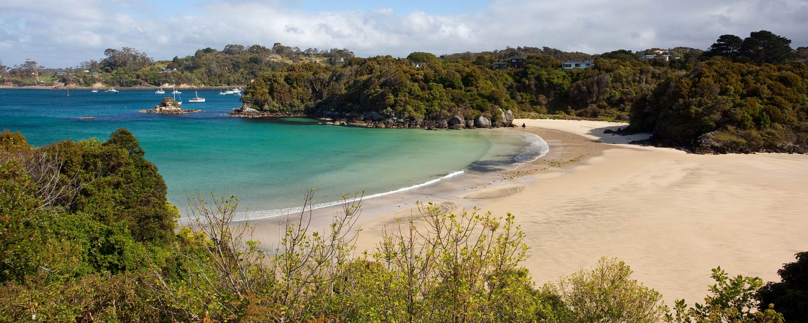

×
Other Islands

From Stewart Island, Chatham, and Subartic Islands, there is plenty to explore in New Zealand's other islands. Much of these
islands are national parks, and thus are nearly uninhabited by humans. This allows visitors to experience
a landscape untouched for thousands of years.